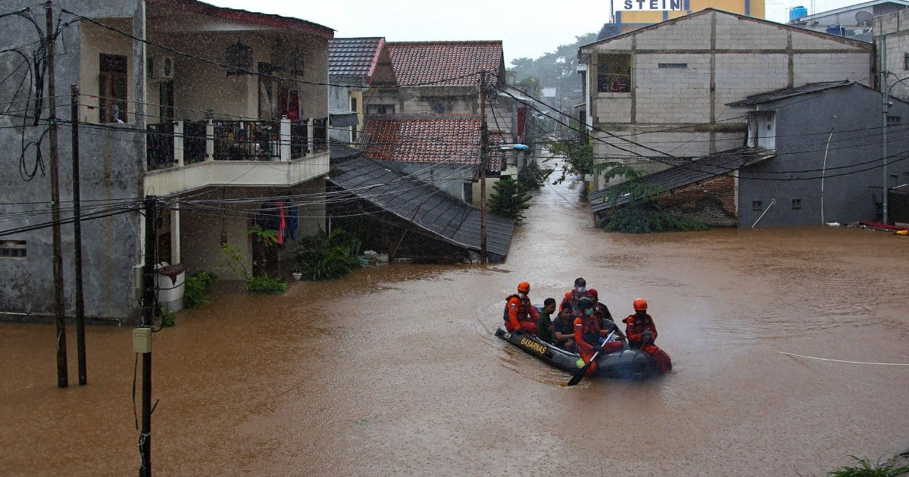

5 Indonesia’s giant capital city is sinking-A case study of Jakarta’s flooding solution
5.1 Summary
Jakarta is the cultural, political and economical heart of Indonesia. This huge cosmopolitan city is with 28 million inhabitants in its metropolitan area, one of the most densely populated cities of South East Asia. However, the Jakarta floods in early 2021 shows how the city’s drainage network can no longer accommodate rainfall, resulting in floods in various locations.

Aside from drainage issues, there are three key contributing factors to Jakarta’s flooding:
Extreme rainfall: Highly intense and short extreme rainfall is becoming more frequent. Extreme rainfall is a direct result of the climate crisis.
Changes in land cover: Land cover data from the Ministry of Environment and Forestry (MOEF) for 2000 and 2019 show growing plantation forests by up to 117.7 percent upstream of the river that flows into Jakarta, replacing agricultural lands. Settlement areas have also grown rapidly by 47.4 percent, replacing agricultural lands and green open spaces in central and downstream areas. Green open space only made up 9.8 percent of Jakarta’s area by 2019. This has increased the risk of overflowing rivers and drainage networks due to high volume of runoff, water, not to mention the threat of sedimentation in rivers due to high erosion rates in upstream areas.
Land subsidence: Land subsidence in Jakarta averages at 12 cm/year. It is even more extreme in the northern coast with a subsidence rate of up to 25cm/year. According to Takagi et al. (2015), subsidence-related flooding will expand by 100.5 km2 by 2050, covering 75 percent of North Jakarta. Building loads and excess groundwater extraction have further accelerated land subsidence. Currently, around 35% of Jakarta residents still use groundwater for their daily needs. As a result, Jakarta’s groundwater level and water storage capacity have continued to decline.
5.1.1 Metropolitan Policy
PetaJakarta.org is a research project led by the SMART Infrastructure Facility, University of Wollongong in collaboration with the Jakarta Emergency Management Agency (BPBD DKI Jakarta) and Twitter Inc. The project enabled Jakarta’s citizens to report the locations of flood events using the social media network Twitter, thereby contributing to a publicly accessible real-time map of flood conditions at PetaJakarta.org. These data were used by BPBD DKI Jakarta to cross-validate formal reports of flooding from traditional data sources, supporting the creation of information for flood assessment, response, and management in real-time.
5.1.2 National Policy
Indonesia’s 2007 Spatial Planning Act is essential to increasing water capacity by requiring all urban areas to set aside 30% of the city land for green space, such as city parks, cemeteries, and green roads. In Jakarta, currently only 10% of the city is green open space, accordingto an analysis by the United Nations Research Institute for Social Development (UNRISD), suggesting a lack ofenforcement for national spatial planning laws at the city level. Jakarta’s most substantial infrastructure response to climate change is the $40 billion National Capital IntegratedCoastal Development (NCICD), which includes the development of a water reservoir, reclamation of land, andconstruction of a seawall along the coast (The Giant Swa Wall of Jakarta), designed to protect the mainland fromtidal flooding.However, the seawall’s projected completion date has been delayed due to stalled negotiations, as the DKI administration is still negotiating with the national Public Works and Public Housing Ministry about which projects will be led by which government bodies (Rahadryan, 2019).
5.1.3 International Policy
On December 19, 2022, the World Bank’s Board of Executive Directors approved a US$400 million loan to support the Government of Indonesia in protecting an estimated 6.3 million people in cities across Indonesia from damage caused by flooding and in bolstering national flood resilience management. The National Urban Flood Resilience Project (NUFReP) will help cities reduce the flood risk by increasing national and city-level flood risk management capacity and through investments for integrated urban flood risk management. It will also support the government in establishing and operationalizing a national urban flood resilience program. The national urban flood resilience program supported by NUFReP will offer a menu of measures to help cities with different flood and climate risks in an integrated manner. This program will serve as a national umbrella program to help coordinate sources of financing and function as a knowledge hub to help Indonesian cities leverage good practices and continuously advance sector policy, practice, and innovation.
5.2 Application
Some researches have already verified that RS techniques can be significantly useful in mapping the flood-affected areas, calculating the dimensions of the flooded area and providing critical information for future disaster preparedness (Mutiara, 2019; Dinuke, 2018). Data from Landsat-8 are utilized which providing multispectral images with eight bands at a spatial resolution of 30 meters, a panchromatic band at 15 meters, and two thermal bands at 100 meters. In Indonesia, there is a government agency which is formed for organizing and providingremote sensing data. The Deputy of Remote Sensing Department of National Institute of Aeronautics and Space, Indonesia (LAPAN) has already obtained an authority to provide Landsat data.
The integration of Landsat satellite data can positively impact Jakarta’s policy and Indonesia’s policy.
5.2.1 Impact on PetaJakarta.org
Data Verification and Supplement: Landsat satellite data can independently verify flood conditions reported by users on Twitter. By comparing the flood extent in satellite imagery with community reports, the actual situation of the flood, including its spread and severity, can be understood more accurately.
Enhanced Flood Monitoring Capability: Combining community reports with Landsat data can create a more comprehensive flood monitoring system. Landsat’s broad view and high spatiotemporal resolution imagery can capture flood events that Twitter reports might miss, making flood monitoring more comprehensive and timely.
5.2.2 Impact on NCICD
Planning and Optimization of Embankment Location: Landsat data can provide detailed terrain and land cover information of river basins, helping decision-makers more accurately plan the location and design of embankments. By analyzing changes in the land surface before and after floods, areas frequently affected by flooding can be identified, guiding the optimal layout of embankments.
Environmental Impact Assessment: Before the construction of embankments, Landsat satellite data can be used to assess the potential environmental impact of the plan. By monitoring changes in vegetation cover, hydrological conditions, and surface temperature of the construction area, the project’s impact on ecosystems can be predicted, providing a basis for formulating mitigation measures.
Project Supervision and Effectiveness Evaluation: After the construction of embankments, Landsat data can be used to monitor the long-term effects and maintenance status of the project. By regularly comparing satellite images of the flood control area, the effectiveness of the embankments in flood prevention and potential issues can be assessed, providing information support for subsequent improvements.
5.3 Reflection
From the aforementioned case analysis, policies addressing urban issues are usually comprised of different levels. International policies tend to be comprehensive and broad, outlining general development directions or involving resource assistance from developed countries to others. Thus, international policies focus on the determination of overall directions and the allocation of resources. National policies typically further analyze problems within a country and propose a feasible plan. However, these plans usually take a long time to complete but have significant effectiveness in solving problems. Therefore, national policies focus on long-term effects. Urban policies often complement national policies, achieving some effects with smaller investments, but many times they cannot fundamentally solve problems. Hence, urban policies focus on short-term effects. In the aforementioned case, the application of RS data can enhance the effectiveness of urban policies, providing validation and supplement for PetaJakarta.org. It can also optimize solutions within national policies, improving the construction locations of embankments; at the same time, it minimizes losses before the completion of national policies by predicting and assessing disasters for floods occurring during riverside construction. The success of national policy plans can also be promoted to other countries through international policies as a model. Other countries affected by flooding can gain experience from Jakarta’s case in RS data application, the public online flood reporting community, and embankment construction projects, fostering global collective development.
5.4 References
Wals, Jorian. (2015). ‘Flood Resilient Cities - An Jakarta Case Study’. 10.13140/RG.2.1.3463.9840.
Hiroshi Takagi, Miguel Esteban, Takahito Mikami, Daisuke Fujii. (2016) ‘Projection of coastal floods in 2050 Jakarta’, Urban Climate 17, pp. 135-145, https://doi.org/10.1016/j.uclim.2016.05.003.
Tomas Holderness & Etienne Turpin, ‘White Paper ‑ PetaJakarta.org:
Assessing the Role of Social Media for Civic Co‑Management During Monsoon Flooding
in Jakarta, Indonesia’, SMART Infrastructure Facility, University of Wollongong
Rahadryan, A. (2019). Jakarta infrastructure: NCICD sea wall project delayed until 2022. PWC Indonesia.
George, Elisha, et al. (2020). ‘JAKARTA POLICY BRIEF’, CITY RESILIENCY AND CLIMATE CHANGE: A REPORT FROM THE INTER-POLICY SCHOOL SUMMIT 2020, pp. 27–32, https://www.jstor.org/stable/resrep42654.7
Syifa, Mutiara, et al. (2019). ’Flood Mapping Using Remote Sensing Imagery and Artificial Intelligence Techniques: A Case Study in Brumadinho, Brazil.” Journal of Coastal Research, pp. 197–204. JSTOR, https://www.jstor.org/stable/26778954
Munasinghe, Dinuke, Sagy Cohen, Yu-Fen Huang, Yin-Phan Tsang, Jiaqi Zhang, and Zheng Fang, (2018). ‘Intercomparison of Satellite Remote Sensing-Based Flood Inundation Mapping Techniques’. Journal of the American Water Resources Association (JAWRA) 54(4), pp. 834–846. https://doi-org.libproxy.ucl.ac.uk/10.1111/1752-1688.12626